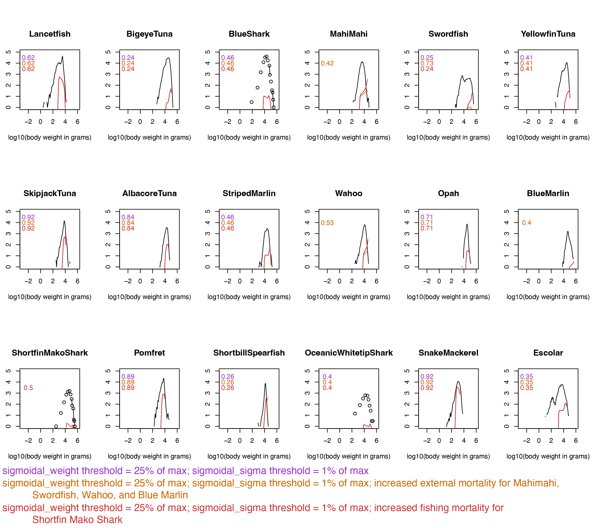
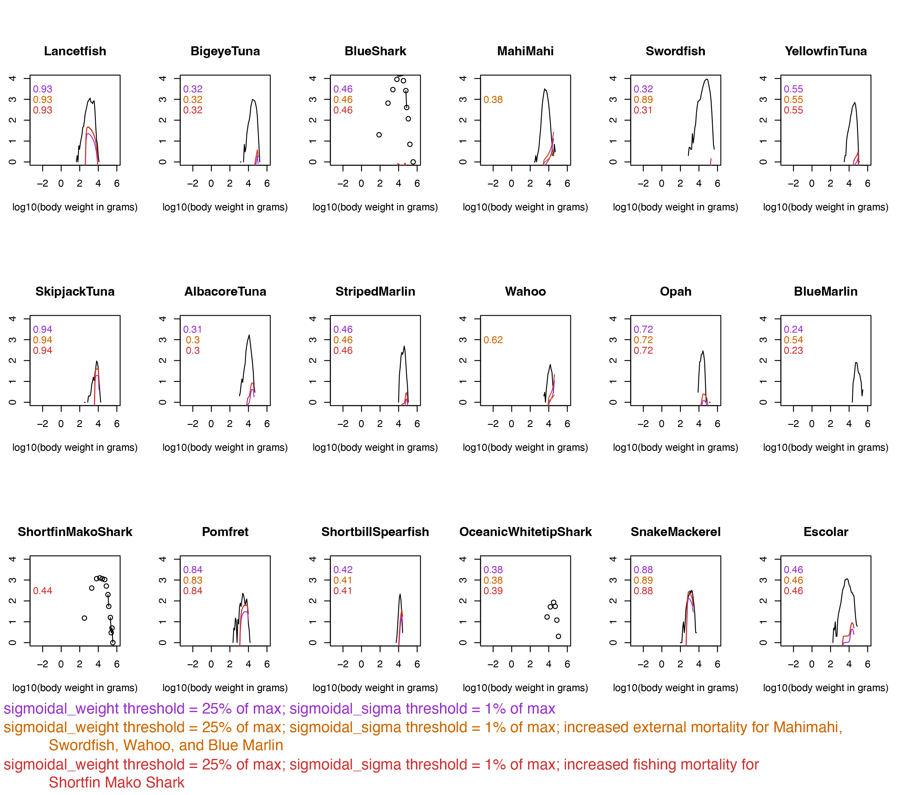

The model presented here offers an improvement over Woodworth-Jefcoats, Blanchard, and Drazen (2019) in that it:
includes six additional species,
models the shallow-set swordfish fishery, and
better fits modeled to observed catch-at-size.
We’ve taken a consistent approach to parameterizing all modeled species and stopped short of taking any species-specific steps to improve the model. That said, there are still ways the model could be improved. We discuss a few options here.
6.1 Improving modeled spectra
There are four species for which the size spectra fail to decrease at the largest body sizes: mahi mahi, wahoo, swordfish, and blue marlin. You can see this in Figure 6.1 below. It may help to zoom in and reposition the figure.
Warning: package 'mizer' was built under R version 4.5.3
Warning: package 'here' was built under R version 4.5.3
Warning: package 'tidyverse' was built under R version 4.5.3
Warning: package 'ggplot2' was built under R version 4.5.3
Warning: package 'tibble' was built under R version 4.5.3
Warning: package 'tidyr' was built under R version 4.5.3
Warning: package 'readr' was built under R version 4.5.3
Warning: package 'purrr' was built under R version 4.5.3
Warning: package 'dplyr' was built under R version 4.5.3
Warning: package 'forcats' was built under R version 4.5.3
Figure 6.1: Steady state biomass spectra
The likeliest reason for this behavior is that these species don’t experience enough predation mortality. These four species have the smallest total interaction with other species (Table 3.3) by virtue of their depth range parameters (Table 3.1). One way to address this would be to increase external mortality for these four species. In mizer, external mortality covers all sources of mortality that aren’t explicitly modeled: predation by species that aren’t included (e.g., cetaceans), capture by fisheries that aren’t included, disease, environmental stress, etc.
In mizer, the default approach to calculating species-specific external mortality, \(\mu\), is: \[
\begin{align}
\mu = z0 w_{max}^{n-1}
\end{align}
\] For our model, this is effectively: \[
\begin{align}
\mu = 0.6 w_{max}^{-0.25}
\end{align}
\] Below is one approach to using external mortality to capture unmodeled predation on mahi mahi, wahoo, swordfish, and blue marlin.
# Initial matrix: 0 for all sizes of all speciesext_mort <-matrix(0, nrow =length(sp), ncol =length(w),dimnames =list("species"=c(sp), "w"=c(w)))# First, fill with default valuesfor (s inseq(1, length(sp), 1)) { ext_mort[s,] <-0.6* w_max[s]^-0.25}# Identify the rows for our speciesidx <-which(sp =="MahiMahi"| sp =="Swordfish"| sp =="Wahoo"| sp =="BlueMarlin")# Loop through them and set external mortality an order of magnitude higher# for our speciesfor (r in idx) { ext_mort[r,] <-10* (0.6* w_max[r]^-0.25)}# Turn it into a data frameext_mort <-as.data.frame(ext_mort)# Save thingswrite.csv(ext_mort, here("Pelagic_external_mortality_10x.csv"), row.names =TRUE, col.names =TRUE)
When you run mizer (see Chapter 7), you’d then load the external mortality in the same way other parameters are loaded:
# Load (along with other parameters)pelagic_external_mortality <-as.matrix(read.csv(here("Pelagic_external_mortality_10x.csv"), row.names =1))
And attach the external mortality after creating a newMultispeciesParams() object called pelagic_params (again, see Chapter 7):
We found that this approached improved the fit for four species in question (Figure 6.2 and Figure 6.3). However, we haven’t included this in the workflow outlined because the approach is subjective (level of increased mortality) and species-specific and therefore might not be appropriate for all applications.
6.2 Improving catch-at-size
As we can see in Figure 6.2 and Figure 6.3, improving the behavior of the spectra for the four species with poor ones improved their correlation with observed catch-at-size. Another way to achieve this, and to improve the fits for some other species (e.g., shortfin mako sharks) would be to increase the level of fishing mortality they experience.
In the examples shown here, we changed the catchability value (and thus F) for shortfin mako shark from 0.018 to 0.2. This improved the correlation coefficients for both the deep-set and shallow-set catch-at-size such that were significant (p < 0.05) and greater than that of several other species. Similar results were obtained for other species when we experimented with increasing fishing mortality systematically for all species. Something to think about when considering Chapter 8.

Figure 6.2: Comparison of observed and modeled deep-set catch at size under different approaches to fit improvement.

Figure 6.3: Comparison of observed and modeled deep-set catch at size under different approaches to fit improvement.
6.3 Improving life history parameters
Because mizer is a size structured model, the parameters w_mat and w_max are particularly important. These values are used to inform processes such as reproduction and natural mortality. Confirming that there aren’t better estimates available, and updating the parameters as new science comes to light, would likely improve the model.
6.4 Improving predation
The species in this model are nearly all apex predators. The limited diet studies available suggest that they primarily eat species other than each other. For this reason, we extend the background resource for the full size range of fish modeled. As a result, most of the predation is of the background resource. While this is probably realisitic, it does mean that there’s very little in the model in the way of predator-prey interactions. Changing one species has little effect on other species. This could be changed by rethinking how predation is modeled. For example, the maximum size of the background resource could be reduced, mid-trophic level species could be added to the model, or the interaction matrix could be approached differently.
6.5 Improving fishing mortality
We use fishing mortality estimates from stock assessments where possible. But the footprints of these assessments extend beyond the footprints of the fisheries we represent in the model. We base our approach on both the minimal international effort where the Hawaiʻi-based fleets operate and on the likelihood that the footprint modeled is large enough to be representative of the full assessment areas. That said, there’s room for improvement in how international fisheries in particular are accounted for. Here, we discuss two possible approaches.
It would be straightforward to add additional international deep-set and shallow-set longline fleets parameterized identically to the existing domestic fleets. The balance of effort across the fleets could likely be gathered from publicly accessible international fisheries data. Validating the modeled catch would be challenging, though, given the confidential nature of the needed international data.
Our model also omits explicit representation of Pacific purse seine fleets. These fleets contribute to the mortality of small, young individuals of the species in our model. It’s possible that capturing this size-specific mortality on immature individuals would improve their model fit.
6.6 Which approach to take?
Whether and how you improve the model depends on your application. In general, it seems prudent to go with the approach that requires the least amount of subjective adjustment yet still results in a model that’s equal to your questions.
Woodworth-Jefcoats, Phoebe A., Julia L. Blanchard, and Jeffrey C. Drazen. 2019. “Relative Impacts of Simultaneous Stressors on a Pelagic Marine Ecosystem.”Frontiers in Marine Science 6: 383. https://doi.org/10.3389/fmars.2019.00383.